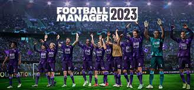
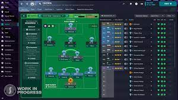

O melhor jogo de futebol de todos os tempos

Football Manager 2023 (abreviado como FM23) é um jogo eletrônico de simulação de gerenciamento de clubes de futebol desenvolvido pela Sports Interactive como parte de sua série Football Manager. Foi lançado em 8 de novembro de 2022, com acesso antecipado duas semanas antes. A versão console do Football Manager 2023, intitulado Xbox Edition no Football Manager 2022, estará disponível nos consoles Xbox e PlayStation; O Football Manager 2022 Mobile estará disponível em dispositivos Android e iOS; e Football Manager 2022 Touch será lançado no Nintendo Switch e no Apple Arcade.
